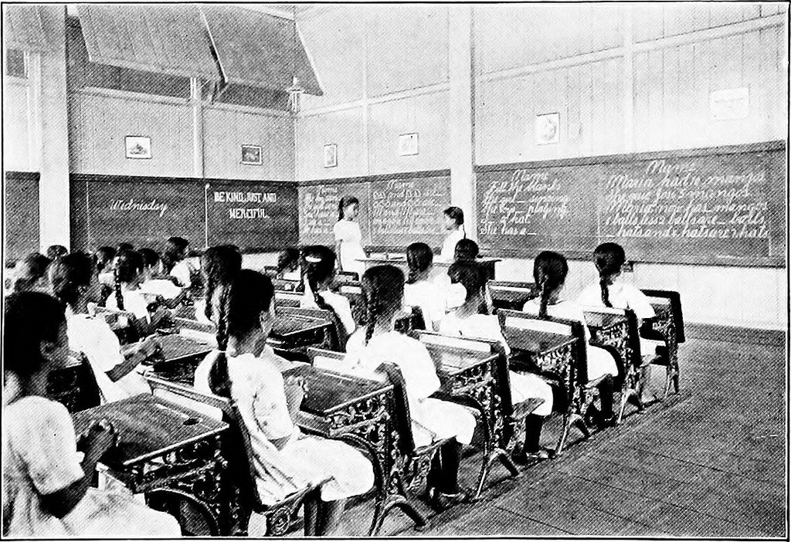

2015-12-10
數位學習研究者Brenda Padilla在他的部落格裡，指出幾個在利用開放教育資源時的姓名標示困擾，或許也是國內一些開放教育使用者正面臨的問題。
首先，Brenda同時開設兩門MOOC，會同時準備兩堂課程的教學活動與素材。雖然兩門課程並不相同，但是內容是相似的。這讓他感到困惑，不知道是否要註明其中一門課程來自自己的另一門課程。而且他在一門課裡會使用非常多由他人創造的資源，不清楚是否所有使用到的開放教育資源都必須標示出處。

此照片：無已知著作權。
另外，他也發現他使用的開放教育資源在標示出處時十分混亂。像是他發現A使用某作品，說某作品是由B所創作的，但同時發現同一件作品在其他地方變成說是由C所創作的。Brenda認為，這可能是因為使用者在某網站上發現一個沒有標示出處的作品時，會假設該作品由該網站作者創作，但是很可能該作品的作者另有其人，只是該網站沒有善加標示而已。
再者，Brenda承認他自己有許多教學活動是在開放教育資源的啟發下所設計的，他覺得好像也應該要標示這些資源，以感謝這些教材對於自己的貢獻。但是他也常常遇到自己和他人想到類似的教學活動，看起來好像自己抄襲其他開放教育資源一樣，實際上他們只是剛好想到同一處而已。
Brenda認為應該避免改變開放教育資源，直接完整的使用整份檔案，可以有助於減少姓名標示錯誤的問題。或是多加使用早已超過著作權保護期限的公眾領域資源，就不用擔心任何標示問題。
針對他的第一個問題，就保險起見，還是應該將所有使用到的開放教育資源都標示出處。雖然可能很麻煩，甚至有些已經很難追溯到出處，但是至少比使用後被他人檢舉好。如果發現這些資源其實在課程中並非必要存在，像是只是作為插圖使用，缺少了也不會影響實質教學內容，就可以乾脆移除掉不使用。至於如果是自己使用自己的作品，由於著作權人都是自己，其實是否要標示出處都是由自己衡量。
第二個問題則是非常難解也非常普遍的問題。華盛頓州局社區與技術學院(SBCTC)基於此問題，推出「OPEN姓名標示產生器」，簡化了姓名標示流程，方便眾人能更輕易且正確的使用開放教育資源，進而使更多教學場合採用開放教育資源。另外，在尋找素材時，則可以多加使用「維基共享資源」的素材，這裡會提供素材的完整履歷，清楚說明來源以及素材上傳者的資料，出處標示錯誤的機率會較其他網站減少許多。
至於Brenda的第三個問題，其實著作權法保障表達而不保障觀念。因此想到相同的教學活動，或是受到概念上的啟發，其實都不會涉及著作權法的相關議題。除非他的教材裡對於教學活動的描述和舉例都與另一份教材如出一轍，才會有著作權的糾紛。若是Brenda真的想要感謝其他開放教育資源帶給他的啟發，也是可以用文字另行感謝，但是不是強制性的，也不會有法律爭議。
Brenda對於多加採用公眾領域的建議很好，不過在使用公眾領域作品時要注意不同國家對於著作權法保障期限的規定不同，像是目前在臺灣是保障作者過世後五十年、在美國則是保障作者過世後七十年，因此有些作品在臺灣屬於公眾領域在美國則仍在保障期限。還有，有些公眾領域作品來自博物館的數位典藏，他們在館藏作品的使用上會有一些要求(像是要標示出處或非商業性使用)，使用時也應特別注意。(想要使用公眾領域素材嗎？可以來這裡找！)
最後，千萬不要因為覺得姓名標示很麻煩就不改編開放教育資源喔！有任何創用CC授權方面的問題，都可以到[CCTW General 創用CC社群論壇區（公開討論群組）] 提問或瞭解前人的問題，千萬別侷限自己善用開放素材發揮創意的潛力！
參考：